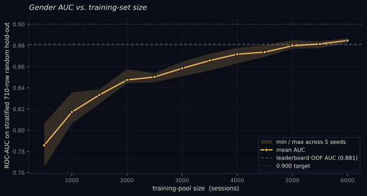

AI architectures
Six years after the original color polygraph, I keep rebuilding the model to see what the same 6,710 sessions look like under different architectures. This page tracks them. Each row is one architecture, each architecture lives in its own folder under the project, each was trained with the same 5-fold cross-validation so the numbers are comparable.
Leaderboard
Note on the numbers. The architecture rows are 5-fold cross-validation on the original 2020 dataset, which skews young, and colour predicts gender most strongly in young children. The long-survey view (and the newest live data) is scored on today's respondents, who are almost all adults and skew male, a group whose colour taste reveals far less about gender. So the lower long-survey numbers are a harder, more representative test set, not a worse model. On that same adult population the long survey still beats the short one, shown by the "short model, same people" reference row in the long view.
best score per column gender = ROC-AUC, higher is better age / mood = MAE, lower is better
| Architecture | Gender AUC | Age MAE | Mood MAE |
|---|---|---|---|
| LightGBM (production) v1.2 | 0.912 | 5.85 | 8.79 |
| LightGBM (production) v1.1 | 0.912 | 5.85 | 8.79 |
| LightGBM (production) v1.0 | 0.886 | 6.48 | 8.76 |
| LightGBM + bucket scores | 0.881 | 6.89 | 8.91 |
| LightGBM + perceptual features | 0.878 | 6.92 | 8.87 |
| Stacked GBM ensemble | 0.877 | 6.61 | 8.96 |
| Single LightGBM | 0.876 | 6.95 | 8.85 |
| LightGBM random search | 0.875 | 6.63 | 9.17 |
| Single XGBoost | 0.875 | 7.14 | 9.08 |
| Hybrid blend | 0.875 | 6.61 | 8.96 |
| HistGradientBoosting | 0.867 | 7.16 | 9.27 |
| MLP (256, 128, 64) | 0.823 | 8.41 | 10.84 |
| BiGRU | 0.812 | 8.59 | 11.18 |
| Linear (logistic / ridge) | 0.810 | 8.77 | 11.35 |
| Transformer | 0.797 | 8.88 | 11.29 |
| LSTM | 0.781 | 8.64 | 11.18 |
best score per column long survey: 256 colours, real + synthetic metrics on a held-out 30% of real long surveys
| Model | Gender AUC | Age MAE | Mood MAE |
|---|---|---|---|
| LightGBM long (production) v1.2 | 0.764 | 6.98 | 10.59 |
| Short model, same people | 0.733 | 7.29 | 14.17 |
Colour-pick models
pick accuracy = how often the model's top-scored colour matches the human's pick chance = 0.25 (one of four) leak gate should sit near chance
| Model | Pick accuracy | AUC | Leak gate |
|---|---|---|---|
| Colour pick (short survey) | 0.513 | 0.729 | 0.266 |
| Colour pick (long survey) | 0.490 | 0.722 | 0.252 |
Last refresh: 2026-06-18. Linked architecture names open a per-model detail page in models/. The 441-feature engineering pipeline is documented at info/features.html. The gender champion adds 33 perceptual extras plus 5 target-encoded colour-bucket scores - see LightGBM + bucket scores for the construction.
Methodology
- Dataset6,710 cleaned sessions, the same export the 2020 deep-dive page uses
- Targetsgender (binary), age (regression, 6 to 68), mood (regression, 0 = happy, 60 = glum)
- Validation5-fold cross-validation, StratifiedKFold for gender, KFold for age and mood (sequence models stratify on gender for the multi-task setup)
- MetricROC-AUC for gender, mean absolute error for the two regressions
- Seed42 everywhere
- FeaturesTree models use the 441-feature engineered vector (explained here). Sequence models read the raw 21-step per-question stream so they can learn their own representation
- Meta-blendLogistic regression for the gender stack; non-negative L1-loss minimisation for the age and mood stacks so the median-trained base learners are not pulled toward the conditional mean by a ridge fit
Would more data break 0.9 on gender?
Random 5-fold CV had every gender-prediction architecture stalling around 0.88 AUC, which made the dataset feel signal-bound rather than model-bound. A second attempt at gender modelling - LAB target encoding, per-question "most-feminine-of-4" decisive-pick features, multi-family bag of LightGBM + XGBoost + CatBoost with a logistic stacker - landed at the same 0.882 OOF AUC. To find out whether 6,710 sessions are actually enough, I held out the same stratified 710-row random sample that the production trainer uses as its evaluation set, and refit the leaderboard-winning LightGBM + bucket scores model at increasing fractions of the remaining 6,000-session training pool: 500, 1,000, 1,500, ..., 6,000 sessions, five random stratified-by-gender subsamples per size.

Validation is the same stratified random hold-out the production row uses, so the curve's rightmost point is directly comparable to the deployed model. Mean AUC climbs steeply from 0.79 at n=500, crosses the 5-fold CV champion (0.881) around n=5,000, and reaches 0.885 at n=6,000 - still trending up, but the slope has eased from ~+0.03 per 1,000 sessions early in the curve to ~+0.005 per 1,000 near the end. Linear extrapolation suggests another 2,000-3,000 sessions would bring the headline to 0.90 if the slope holds, but the curve's shape leaves room for the model to plateau sooner. Either way, the signal is not exhausted yet: more data still buys honest AUC.
Why so many architectures
Tabular gradient boosting wins almost every time on small structured data, and the color polygraph is small structured data. The transformer and the recurrent models are there to test whether the per-question order and timing carry signal that the engineered features lose. The answer so far is mostly no: every sequence model loses 6 to 9 AUC points on gender and 2 to 3 MAE points on age, and the hybrid blender that mixes their out-of-fold predictions with the GBM stack lands with weight ~1.0 on the trees and ~0 on the rest.
Each column now has a different winner. The full stacked ensemble still owns the hardest target (age regression). The cheaply-tuned default Single LightGBM stays best on mood, because random search overfits on a low-signal target. A single LightGBM with 33 perceptual extras plus 5 target-encoded colour-bucket scores edges every other architecture out on gender. The bucket scores are the headline win: a 512-cell RGB grid where each cell holds an average "femininity" / "masculinity" delta computed across training users, looked up trilinearly per pick. The signed total of those lookups becomes the single highest-gain feature in the entire vector.
The baselines exist to keep the rest of the leaderboard honest. If a logistic regression gets within a percentage point of the stacked ensemble, the ensemble is not earning its keep. Here the full ensemble earns roughly 0.3 AUC, 0.5 MAE on age, and 0.15 MAE on mood over the hand-tuned baselines - a real but modest win.